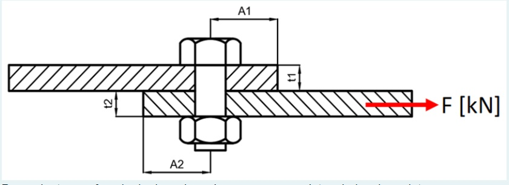

<section class="content-modal">
  <header class="modal-header">
    <h2 class="templateConteudo">{{ title }}</h2>
    <button mat-button mat-dialog-close class="close-button top-close">
      <span class="close-icon">✖</span>
    </button>
  </header>

  <div class="modal-content">
    
    <h2 class="text-center">Exercício: Junta Parafusada</h2>

    <p><strong>Dados de projeto:</strong></p>
    <ul>
      <li>Força Aplicada: 1750 N</li>
      <li>Coeficiente de Segurança: 3,5</li>
    </ul>

    <p><strong>Material do(s) parafuso(s):</strong></p>
    <ul>
      <li>σe: 330 MPa</li>
      <li>σLRT: 429 MPa</li>
      <li>Von Mises</li>
    </ul>

    <p><strong>Material das chapas:</strong></p>
    <ul>
      <li>σe: 110 MPa</li>
      <li>σLRT: 160 MPa</li>
      <li>Tresca</li>
    </ul>

    <form #exercicioForm="ngForm" class="mt-4">
      <div class="mb-3">
        <label for="diametro" class="form-label">a) Diâmetro do(s) parafuso(s) (mm):</label>
        <input
          type="number"
          id="diametro"
          name="diametro"
          class="form-control"
          [(ngModel)]="respostas.diametro"
          required
        />
      </div>

      <div class="mb-3">
        <label for="espessura" class="form-label">b) Espessura da chapa t2 (mm):</label>
        <input
          type="number"
          id="espessura"
          name="espessura"
          class="form-control"
          [(ngModel)]="respostas.espessura"
          required
        />
      </div>

      <div class="mb-3">
        <label for="distancia" class="form-label">c) Distância A2 (mm):</label>
        <input
          type="number"
          id="distancia"
          name="distancia"
          class="form-control"
          [(ngModel)]="respostas.distancia"
          required
        />
      </div>

      <button type="button" class="btn btn-primary w-100" (click)="verificarRespostas()">Verificar Respostas</button>

      <!-- Resultados após verificar -->
      <div *ngIf="resultados['diametro'] !== undefined" class="mt-4">
        <h3>Resultados:</h3>
        <ul>
          <li>
            Diâmetro do(s) parafuso(s): 
            <span [ngClass]="resultados['diametro'] ? 'text-success' : 'text-danger'">
              {{ resultados['diametro'] ? 'Correto' : 'Incorreto' }}
            </span>
            (Correto: {{ valoresCorretos['diametro'] | number:'1.2-2' }} mm)
          </li>
          <li>
            Espessura da chapa t2: 
            <span [ngClass]="resultados['espessura'] ? 'text-success' : 'text-danger'">
              {{ resultados['espessura'] ? 'Correto' : 'Incorreto' }}
            </span>
            (Correto: {{ valoresCorretos['espessura'] | number:'1.2-2' }} mm)
          </li>
          <li>
            Distância A2: 
            <span [ngClass]="resultados['distancia'] ? 'text-success' : 'text-danger'">
              {{ resultados['distancia'] ? 'Correto' : 'Incorreto' }}
            </span>
            (Correto: {{ valoresCorretos['distancia'] | number:'1.2-2' }} mm)
          </li>
        </ul>
      </div>
    </form>
  </div>

  <footer class="modal-footer">
    <button mat-button mat-dialog-close >Fechar</button>
  </footer>
</section>
